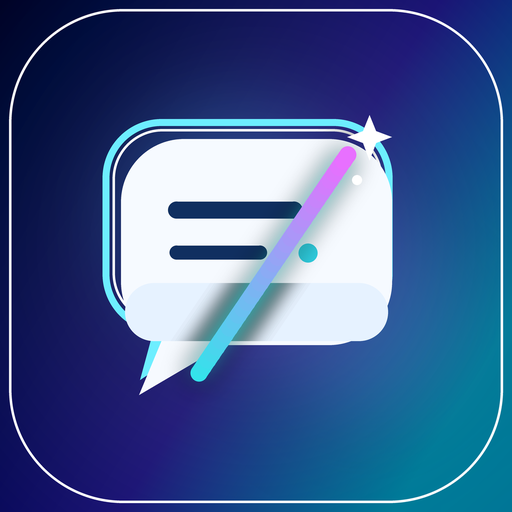

Read in two languages
Stream translated text beneath its original paragraph. Nearby passages are processed first, and recent results can be reused without another API request.

QudadFlow TranslatorBuilt for Microsoft Edge
A quieter way to translate the web. Keep the original in view, choose your translation provider, and read at your own pace.
Your API or a limited key-free basic trial
Current extension interface: Simplified Chinese
Stream translated text beneath its original paragraph. Nearby passages are processed first, and recent results can be reused without another API request.
Configure your endpoint and credentials. Translation requests go from the extension to your chosen provider, with permission for that API domain.
Enable the selection button on a site, select a phrase, and click Translate. Read the result beside your selection. No request is sent just by selecting text.
VERSION 0.7.0
Traditional translation APIs and AI both power immersive reading. Open PDF, Word DOCX, TXT or Markdown in the reader. Choose in-place replacement, original-layout comparison, or reflowed paragraph comparison. PDF pages keep their original ratio, images and charts. Long or unsupported text keeps its original with a clickable full translation.
Word renders tables, embedded images and margins in the browser; complex layouts and fonts can differ from Microsoft Word. TXT and Markdown keep reading-paragraph positions. Translate the current page or all pages, stop/resume and export bilingual TXT. Layout-preserving PDF/DOCX export is not included.
Version 0.7.0 adds a webpage research workspace and the same paper analysis in PDF, Word, TXT and Markdown. Extract figures locally, select an editable Skill, ask about methods or evidence, and export the analysis. Optional notebook memory is off by default, bounded, isolated by project and exportable in Settings.
Recognize a chart, then generate downloadable Python or R drafts with data requirements and uncertainty notes. Code is never executed by the extension; exact reproduction requires original data and independent checks. Research workflow and limits →
The optional bottom workflow extracts PDF/Word pictures locally. Crop vector charts from a PDF or capture a whole page, preview the image, then click to translate its text and explain the chart. Select a separately saved vision AI profile while keeping a traditional provider for the body. No AI request is sent during extraction; only clicking analysis sends the selected images.
For a PDF open in Edge, choose PDF / 文档左右对照 in the popup, open the prefilled link or choose a local file. Maximum 25 MB, 300 pages/reading sections and one million text characters. Scanned body replacement needs external OCR. AI page-image analysis does not replace scan text. Requires Chromium-based Edge 125+. Setup and limitations →
0.7.0 passed 169 isolated checks using generated documents and simulated APIs. Real-provider speed and translation quality remain unverified. See the submission record for the current store update status.
Keep up to 20 named API profiles, edit or duplicate them, and switch from the popup. Existing connections are preserved, with keys stored only in this browser.
Settings also offers a MyMemory trial without a key: English → Simplified Chinese by default, with a manually selected source language. Its typical anonymous quota is 5,000 characters/day; it may retain submitted text, so use non-private short samples. This is a limited public service, not an unlimited API. Provider terms and privacy →
Support & privacy
Questions about configuration or your data? Get in touch.
QudadFlow Translator is an independent extension and is not affiliated with the listed providers. Provider accounts, fees, availability, and privacy terms apply. See the privacy policy before configuring a service. Version 0.5.0 is Live in Edge Add-ons, confirmed October 21, 2026. The 0.7.0 update is submitted and In review; see the current submission record.